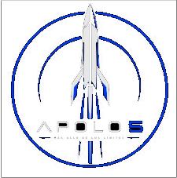

01 / FÍSICA
Acción y reacción
La tercera ley de Newton explica cómo expulsar masa hacia abajo genera un empuje en sentido contrario.
LEYES DE NEWTON ↗

APOLO5MÁS ALLÁ DE LOS LÍMITES Cuenta regresiva ↗Cada despegue comienza con una pregunta. La nuestra es: ¿hasta dónde puede llevarnos la ciencia?
Somos APOLO5. Transformamos curiosidad en conocimiento, ideas en diseño y principios de ingeniería en un proyecto que busca ir más allá de los límites.
NO SE TRATA SOLO DE LLEGAR MÁS ALTO
Un cohete es mucho más que una máquina: es física, matemáticas, creatividad y trabajo en equipo en movimiento.
En APOLO5 exploramos cómo los principios científicos se convierten en decisiones de diseño. Cada cálculo, prueba y mejora nos acerca a comprender lo que hace posible un lanzamiento.
Conoce la ciencia detrás del vuelo →LA CIENCIA DEL DESPEGUE
Detrás de cada lanzamiento existe una conversación entre fuerzas, energía y movimiento. Estas son algunas de las ideas que hacen posible abandonar el suelo.
La tercera ley de Newton explica cómo expulsar masa hacia abajo genera un empuje en sentido contrario.
El movimiento depende de la velocidad, la aceleración y el equilibrio de fuerzas durante el vuelo.
Materiales, geometría y distribución de masa influyen en el desempeño y la confiabilidad del sistema.
Aprender, probar, medir y mejorar: así se construye el conocimiento.
APOLO5 / SISTEMA DE VUELO
Una misión comienza mucho antes de encender motores: con diseño, pruebas y decisiones de ingeniería. Explora nuestro cohete y activa la secuencia visual.
DE LA IDEA A LA EXPERIENCIA
Lo investigamos, lo diseñamos y lo ponemos a prueba. Este proyecto es una oportunidad para conectar teoría y práctica, asumir retos y descubrir todo lo que podemos lograr cuando trabajamos en equipo.
EL MOMENTO SE ACERCA
Cada segundo nos acerca al lanzamiento final.
SISTEMA DE SEGUIMIENTO ACTIVO
Audio ambiental opcional · Se activa únicamente al pulsar el botón